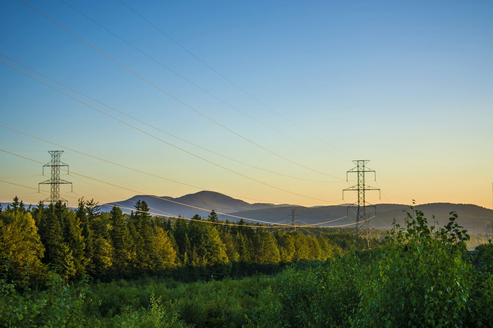
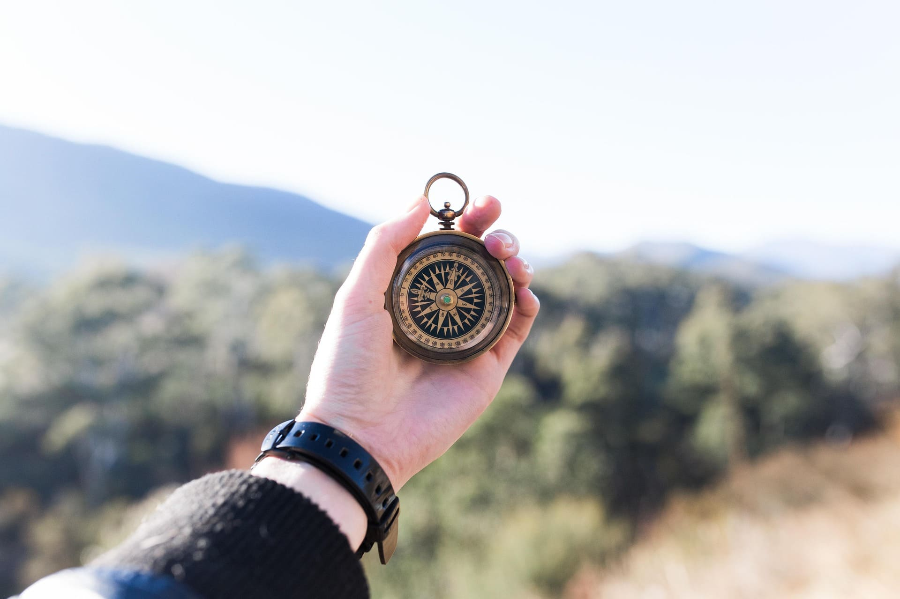
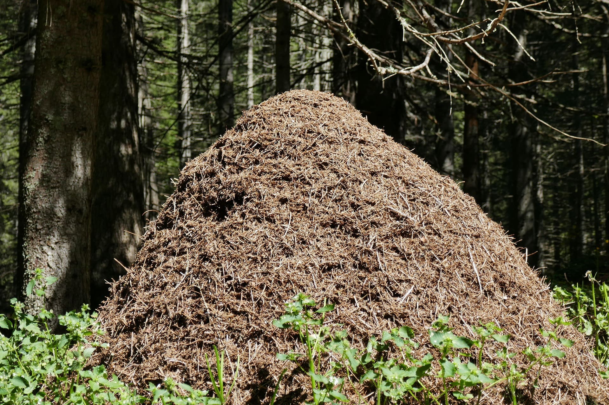
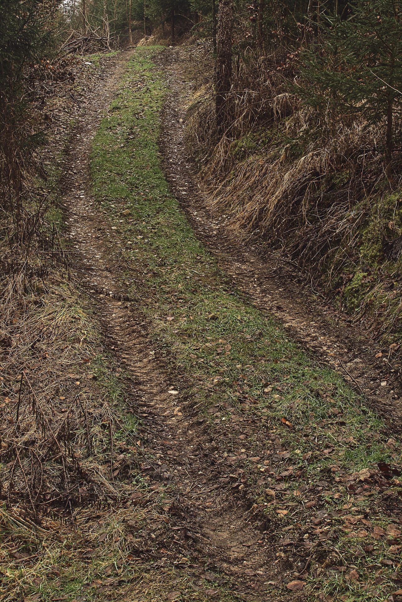

подготовка маршрута 
01Как отправиться в путь?
- Отметки на пути: оставляйте зарубки на деревьях, кучки камней, шишек и т.п.
- Выбор ориентиров до похода: выбирайте линейные объекты (дорога, просека, ЛЭП), чтобы по ним ориентироваться на обратном пути.

ориентация по приборам
02Как использовать компас?
- Проверка компаса: проверьте компас с помощью металлического предмета или магнита.
- Ориентация по компасу: синяя стрелка — на север, красная — на юг. Запишите нужное направление, следите, чтобы не двигаться по кругу.

ориентация в природе
03Как ориентироваться в природе?
- Деревья:
- Кора берез и сосен темнее на северной стороне.
- Мох гуще на северной стороне.
- Смоляные капли обильнее на южной стороне.
- У елей больше веток с юга.
- Муравейники положе с южной стороны.
- Солнце: В полдень Солнце в Северном полушарии находится на юге. Стоя спиной к солнцу: перед вами север, слева — запад, справа — восток.
- Звёзды: Используйте Большую Медведицу и Полярную звезду для нахождения севера. Для этого найдите две правые звезды в «стенке» ковша, проведите мысленную прямую от этих звёзд вверх — она упрётся в Полярную звезду.

поиск пути
04Как найти людей?
- Ищите ориентиры: Река, ручей, просека, полевые дороги, тропы, линии электропередач — всё это может привести к населенному пункту.
- Прислушивайтесь: Звуки техники, коров, петухов, лая собак могут указывать на близость деревни или фермы.
- Следите за следами: Следы от шин, подкова, кострища, пластиковый мусор — признаки того, что здесь бывали люди.
- Избегайте препятствий: Двигайтесь по более открытым участкам, где легче сохранять направление и выше вероятность заметить другие ориентиры.
